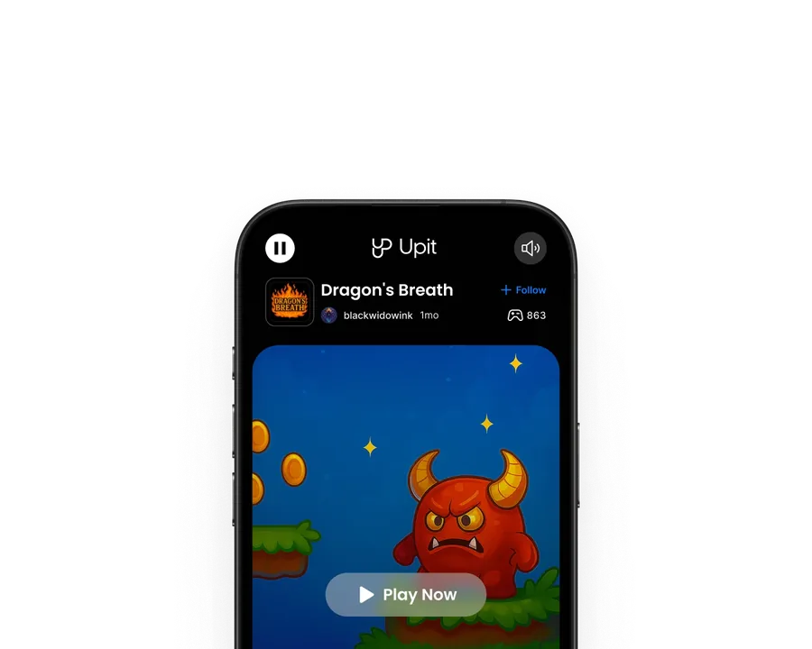
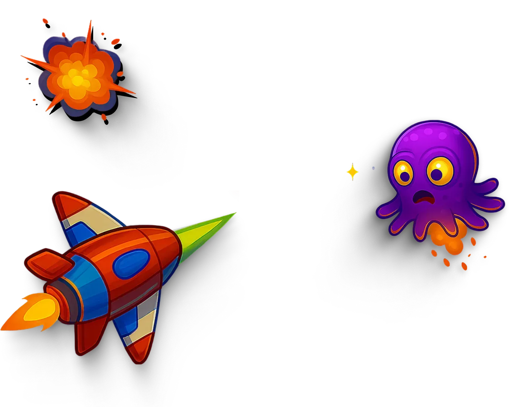
Your Ideas
Instant Games
Introduction
Upit is a social platform where players can discover indie games and creators can build new titles with the help of AI.
The redesign of Upit's Play Screen represents a strong and fundamental evolution in balancing gaming mechanics and social elements.
Through iterative design and A/B testing, I led the transformation of the Play Screen from a purely functional interface to a socially-engaged gaming experience that increased average daily social interactions by up to 95% while maintaining core gaming metrics.
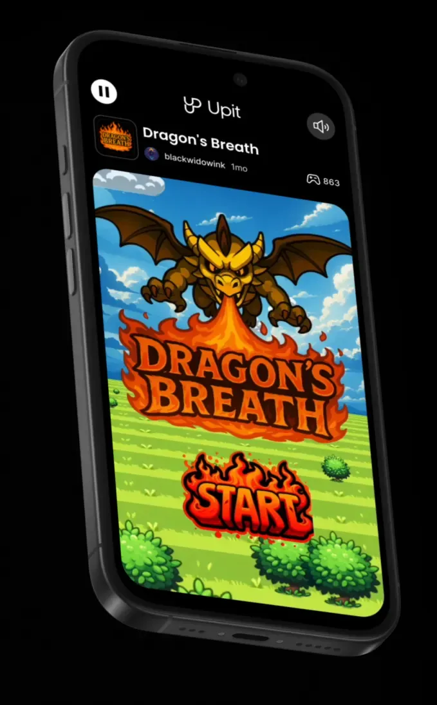
Challenges
User research and analytics revealed several pain points with the original experience.
Low engagement and retention. First‑day retention for players was about 16–17 % and even lower for creators (≈ 14 %), while average daily social interactions (ADSI) were only 0.142. Players typically closed the game after a round instead of exploring communities or creators.
Lack of recognition for creators. Upit’s product vision emphasises core social needs such as validation, community connection, learning and audience building. The old play screen did not encourage players to follow, comment on or remix games.
Poor onboarding. Many players did not realise they could join communities, follow developers or remix games. Users rarely explored beyond the single title they were playing.
The challenge was to introduce social features that would enhance rather than detract from the core gaming experience.
My Role
I joined Upit as a Senior Product Designer to lead the full redesign of the play experience across mobile and desktop.
My role covered the entire process, from defining the problem to delivering polished designs.
Key responsibilities included:
- Collaborating closely with engineers, product managers, and stakeholders.
- Using research and data to identify challenges and set success metrics.
- Understanding technical constraints and iterating quickly with engineers.
- Leading design exploration, wireframing, prototyping, and visual design for the play screen and its components.
- Working with the growth team to design and analyse A/B tests to validate assumptions.
UX Goals
From these insights I defined a set of goals for the new play screen:
Celebrate creators
Show clearer information about the game’s author, allow players to follow them and show status markers (e.g. medals, achievements) to build trust.
Social interactions
Make it easy to comment, vote, share and join communities. Integrate these actions into the paused states rather than hiding them on separate pages.
Play and creation
Provide clear entry points to remix a game or apply to become a creator, aligning with our product goal of turning players into creators.
Enhance user retention
Create reasons for users to return beyond just playing games such as saving games progress, leaderboards and daily challenges with other players.
Maintain game engagement
Add social features ensuring social features don't negatively impact gaming metrics such as rounds started, session duration and unique games played.
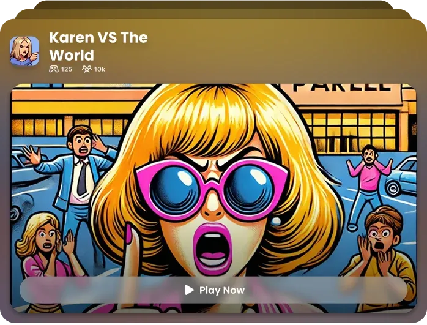
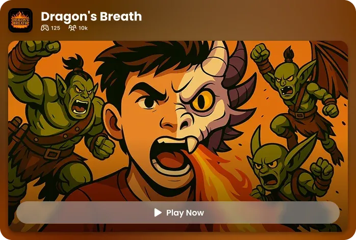
Design Process
Discovery and research
I analysed internal data and interviewed both players and creators. The interviews revealed strong motivations: creators wanted recognition and validation, and players enjoyed community connection and challenges (collecting achievements or medals).
I conducted competitive analysis of platforms like TikTok, Roblox and itch.io, showing how social feedback loops (likes, comments, remixes) drive retention. I also analysed the old play experience and mapped out the user journey from finishing a round to leaving the app noticing that the drop‑off after the game‑over screen was steep.
Ideation and prototyping
I sketched multiple concepts that combined gameplay with social features. Early wireframes explored modular overlays that could appear at the end of a round: a score summary, quick‑action buttons, a comment feed and a section for remixes.
I then built interactive Figma prototypes and ran usability tests with five players and five creators. Players appreciated immediate recognition and the visually appealing banners and icons but were overwhelmed when too many elements appeared at once. Moreover, comments and upvotes needed to be visible in context, burying them behind a tab clearly reduced interaction.
Development partnership
Throughout the design and implementation of the play screen, I worked closely with a diverse, multidisciplinary team, including engineers, designers, and data analysts, to refine the new layouts in response to component limitations prioritising user retention, social engagement and accessibility. Together, we established a comprehensive design system with reusable components for cards, buttons, banners, and lists, which supported rapid iteration and effective cross-functional collaboration.
A/B Test
We validated the new play screen through two large A/B tests.
PlayScreen V2 (June 23 – July 14 2025)
Our first A/B test compared the new design (V2) with the existing play screen for a total of two consecutive weeks. The test targeted both desktop and mobile users in a 50/50 split.
Key results:
| METRIC | V2 change vs. V1 |
|---|---|
| ADSI – social interactions | +22% |
| Joined communities | +40% |
| Posted comments | +240% |
| Upvotes | +24% |
| Game session duration | –22% |
| Started rounds | –33% |
| Unique games played | –28% |
| D1 retention (DARU) | –2.8% |
The new design dramatically increased social activity, particularly on desktop: comments per daily active user rose by 240%, and communities joined increased by 40%
However, the added friction and animation-heavy transitions reduced game engagement, especially on mobile: session duration fell by 22% on mobile and rounds started dropped by 33%
Retention was slightly worse for registered users, suggesting that we needed to balance social interaction with core gameplay.
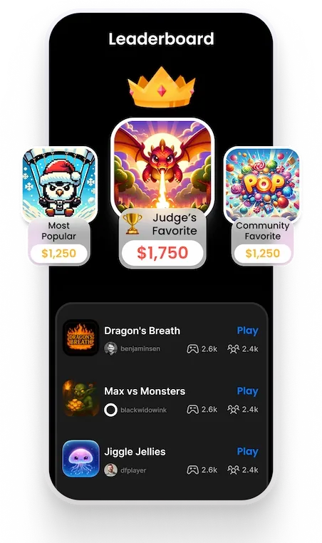
PlayScreen V2.1 (July 17 – July 27 2025)
In response to these trade‑offs we iterated on the design. We reduced animation times, simplified buttons, removed visual clutter and added quicker ways to restart a round. A second A/B test (V2.1) ran with the same 50/50 split.
Key results:
| METRIC | V2.1 change vs. V1 |
|---|---|
| ADSI – social interactions | +95.7% |
| Joined communities | +77% |
| Posted comments | +239% |
| Upvotes | +69% |
| Game session duration | –1.2% |
| Started rounds | +14% |
| Unique games played | –26% |
| D1 retention (DARU) | +0.2% |
This iteration successfully retained the social gains while mitigating many gaming losses.
D1 retention equalised across platforms and ADSI almost doubled on desktop.
Mobile still showed declines in rounds started and unique games played, but the drops were smaller than in V2. Based on these results we rolled out V2.1 to 100 % of users while planning further optimisations for mobile.
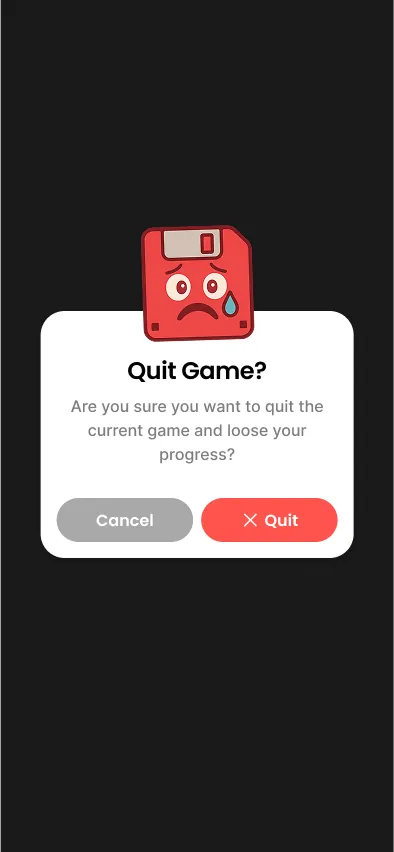
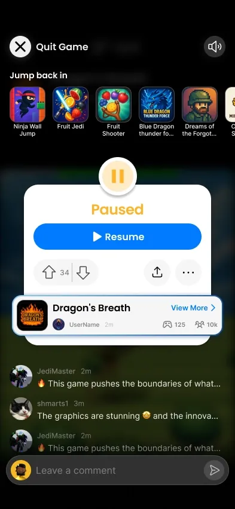
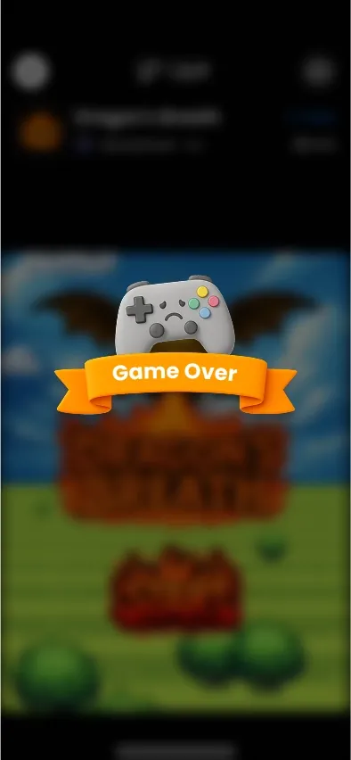
Iterations and design results
To further enhance user experience and drive engagement, I closely analysed feedback and performance data from earlier versions of the play screen. Between V2 and V2.1 I made several notable changes.
The most impactful results:
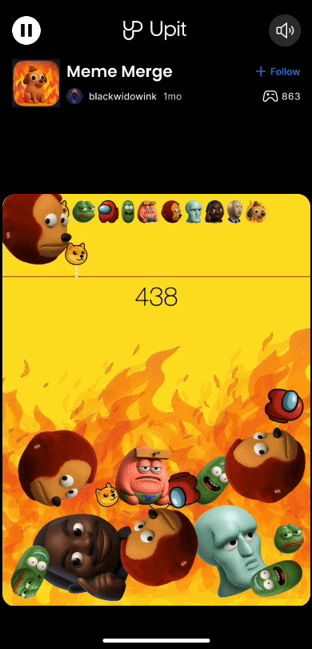
Reduced motion overhead
I reduced the transitions between play rounds from 2–3 seconds to under 1 second, which helped increase rounds started by 14 % on desktop.
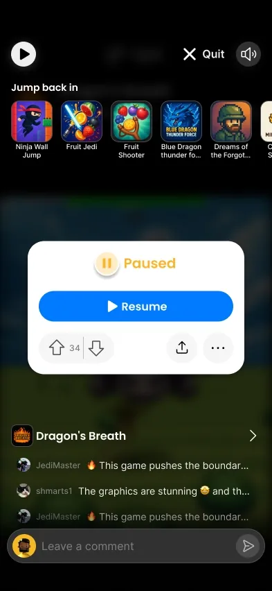
Refined hierarchy
The score banner was reduced in size with a simpler and cleaner visual design.
The Play again button was emphasised and made the main CTA.
Secondary actions (upvote, share, more) were moved to a compact row, reducing clutter.
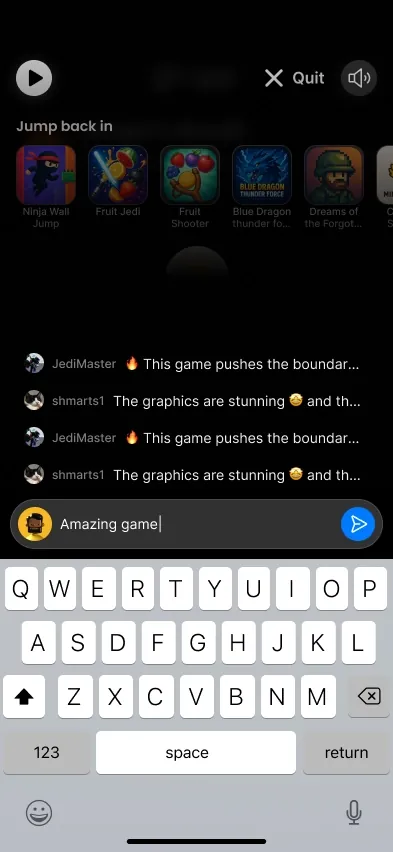
Contextual comments
Instead of automatically showing a full feed, comments now appear in an expandable sheet.
Players can quickly scan a few comments and leave one without scrolling away from the play controls.
Takeaways
- Balance is critical - Adding social layers boosted engagement but initially hurt core gameplay. Iterative design via A/B testing helped find a sweet spot where social actions enhanced the play experience.
- Mobile is not desktop- The same design can have huge different effects across devices. Mobile players are very sensitive to latency and clutter; small changes in animation and layout can have a great impact on key metrics.
- Analyse everything - Without comprehensive analytics we would not have detected the decline in session duration or the recovery after adjustments. Partnering with data analysts early on was essential.
This project demonstrates how a comprehensive, data‑driven design process can transform a seemingly simple screen into a social hub that celebrates creators and builds community while keeping the solid structure of the gameplay experience.